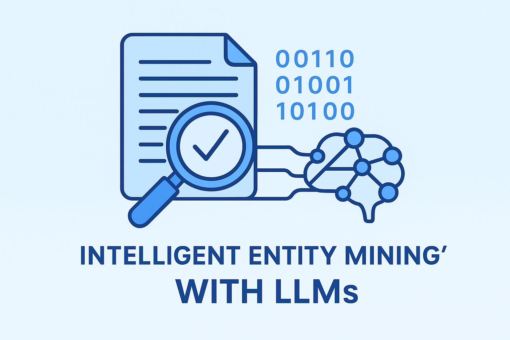

Intelligent Entity Mining with LLMs
Built a production-ready pipeline to extract and normalize entities from large volumes of free-text operational data. This system prepared structured outputs for downstream analytics and reporting.
Problem Statement
Large volumes of unstructured operational text made it difficult to measure and monitor key entities. Manual extraction was slow, inconsistent and error-prone which blocked automation and analytics.
Approach
- Cleaned and preprocessed raw text with Python preparing standardized inputs for the LLM.
- Designed few-shot prompt templates for an LLM to to identify and classify entities from free text.
- Iteratively refined prompts to achieve high extraction accuracy, ensuring consistency across varied text formats.
- Built post-processing rules to normalize entities into canonical forms for analytics.
- Packaged pipeline to output CSV/Excel.
Key Results
- Achieved ~95% extraction accuracy after prompt refinement and normalization (measured on labeled samples).
- Reduced manual tagging effort substantially — enabling faster analytics and higher data readiness.
Business Outcome
By converting unstructured text into reliable structured entities, stakeholders can now:
- Feed high-quality inputs to dashboards and trend analysis (improves decision confidence).
- Automate downstream reporting and alerts (frees analyst time for higher-value tasks).
- Identify frequent failure patterns earlier, enabling operational fixes and cost savings.